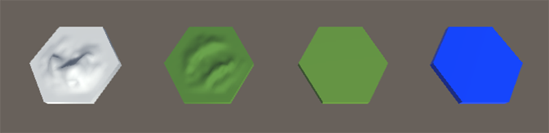

In this tutorial we'll look at adding some more tile types to our hex map, the first step in doing that is to bring some more blend files into our project. For this example I created very basic tiles for mountains, hills, grass and water. As this is just a prototype we don't need to worry too much about the look of things, you could spend hours making really nice looking tiles or you could make something quickly and worry and polishing the look of your game in the future.
Download the required blend files here:
and place them into your Assets directory under Resources/Models.
Now let's take a look at the code changes needed to bring these into use
First of all in our HexMap class we're going to add some more public and private variables to allow us to change at run- time the height where each of the tiles is instantiated. When creating our tiles we will query Mathf.PerlinNoise to give us a height between 0.0 and 1.0 so our heights for the different tiles should lie in that range.
public int Width = 16;
public int Height = 32;
public float Scale = 4.0f;
public int Seed = 1;
public float MountainHeight = 0.8f;
public float HillHeight = 0.64f;
public float GrassHeight = 0.4f;
int m_width;
int m_height;
float m_scale;
float m_seed;
float m_mountainHeight;
float m_hillHeight;
float m_grassHeight;
GameObject[,] m_hexes;
We already were using Width and Height. We have added in a Scale value which is used to determine the size of features in the terrain, for example a larger scale will give us bigger mountain ranges and bigger lakes and seas. We have also added in a Seed value which we will use when sampling the Perlin noise later. The mountain, hill and grass height variables have also been added.
The RequiresReset function has to be updated to handle the new variables as well, eventually we will write a helper class so that we don't have to manually check for changes in each variable. That will be in a later tutorial though.
bool RequiresReset()
{
return (
Width != m_width ||
Height != m_height ||
Scale != m_scale ||
Seed != m_seed ||
MountainHeight != m_mountainHeight ||
HillHeight != m_hillHeight ||
GrassHeight != m_grassHeight
);
}
And now we come to ResetHexMap where again the majority of the interesting code lives. We will slowly start to split some of this functionality out into a Tile class in future tutorials to allow us greater flexibility but for now we keep all of the functionality in the one function for quicker prototyping.
void ResetHexMap()
{
m_width = Width;
m_height = Height;
m_scale = Scale;
m_seed = Seed;
m_mountainHeight = Mathf.Max (HillHeight, Mathf.Min (1.0f, MountainHeight));
MountainHeight = m_mountainHeight;
m_hillHeight = Mathf.Max (GrassHeight, Mathf.Min (MountainHeight, HillHeight));
HillHeight = m_hillHeight;
m_grassHeight = Mathf.Max (0.0f, Mathf.Min (HillHeight, GrassHeight));
GrassHeight = m_grassHeight;
m_hexes = new GameObject[m_width, m_height];
for(int z = 0; z < m_height; ++z)
{
float rowXOffset = (z % 2 == 0) ? 0.0f : 0.75f;
for(int x = 0; x < m_width; ++x)
{
string resource = "Models/river";
float r = Mathf.PerlinNoise((x / m_scale) + m_seed, (z / m_scale) + m_seed);
if (r > m_mountainHeight)
{
resource = "Models/mountain";
}
else if (r > m_hillHeight)
{
resource = "Models/hill";
}
else if (r > m_grassHeight)
{
resource = "Models/grass";
}
m_hexes[x, z] = (GameObject)Instantiate(Resources.Load(resource));
m_hexes[x, z].transform.position = new Vector3(x * 1.5f + rowXOffset, 0.0f, z * 0.433f);
m_hexes[x, z].transform.parent = gameObject.transform;
}
}
}
When setting our private variables to the public facing variables we do some bounds checking to ensure that mountains are always higher than hills which are higher than grass tiles and all of them are bounded in the 0.0 to 1.0 range.
In the iteration through the tiles we use Mathf.PerlinNoise by passing through the x and y positions, scaled by our scaling value with the seed added on. The seed essentially shifts the values returned along the x and y axes.
We then check the height returned by the noise function to determine which tile should be placed and creating it. Note that we now also set the parent of the tiles transform to the transform of the game object to which this script is attached. This gives us a neater display in the Hierarchy view in the editor.
So in the end this looks like this:

The complete source code for the HexMap class can be found here